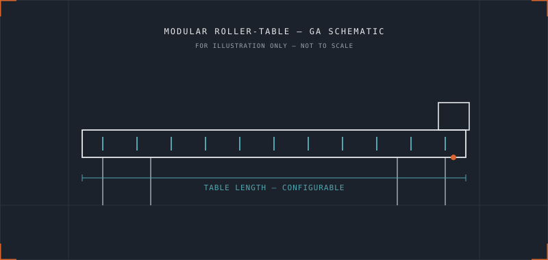

Anonymised examples from across the engineering lifecycle.
No confidential employer information, customer names, proprietary dimensions or commercially sensitive data is included below.

Engineering workflow and drawing-issue platform
A working SOLIDWORKS Task Pane application developed to improve engineering drawing and production-data issuing: project configuration, automatic folder creation, metadata extraction, file validation, property-driven naming, PDF issue workflows and drawing issue stamps, with scope for future DXF, BOM and reporting modules.
Sheet-metal DXF and revision-management tools
Development work aimed at ensuring flat-pattern exports, profile numbers, revision and production properties are always drawn from the correct SOLIDWORKS configuration — addressing a common and easily overlooked source of production errors.
Configurable modular roller-table system
A rules-based configurator for a modular roller-table product, handling table dimensions, panels, end sections, rollers, motors, guards and legs, and linking configuration choices to part numbers, DXF references and manufacturing rules.
Rotating machinery and vibration investigation
Investigation into a rotating coil and shaft assembly operating at elevated speed, covering runout measurement, bearing considerations, manufacturing tolerance review and test-method development to separate design, fabrication and assembly causes.
Fabrication and tolerance development
Work on heavy box-section and machined-component interfaces where material variation, weld seams, machining allowances and assembly tolerances affected repeatability — feeding directly back into design compromises and production feedback.
Machinery procurement and manufacturing technology
Support assessing and introducing manufacturing equipment including tube-laser technology, multi-axis processing, nesting software and cut parameters, and integrating new equipment into existing engineering workflows.
Hydraulic and mechanical equipment assessment
Analysis of lifting and tipping machinery using load estimation, centre-of-gravity considerations, lever geometry, hydraulic cylinder forces and structural load paths. Formal certification and safety-critical structural validation may require appropriately qualified third-party specialists.
Have a similar problem?
Describe the current process and what a better outcome would look like.